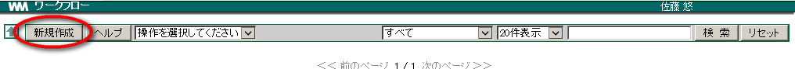
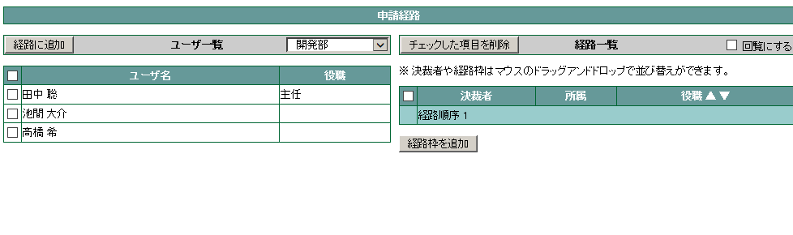
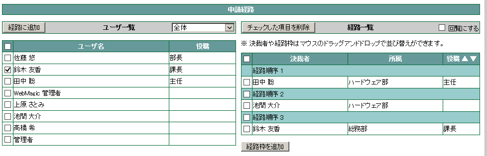
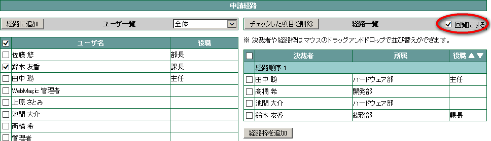
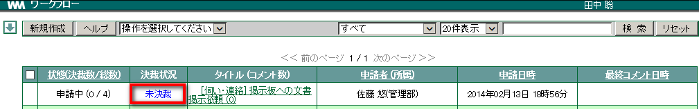
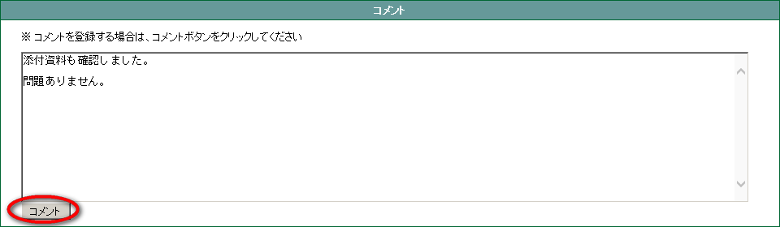
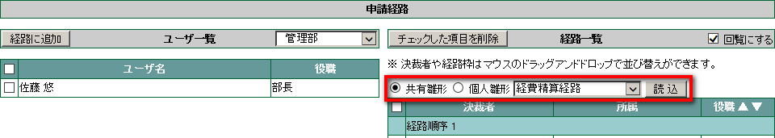
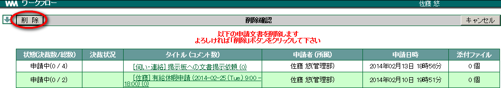

13. ワークフロー¶
13.1. 申請する¶
メニューの
 をクリックします。
をクリックします。新規作成 をクリックします。

「タイトル」と「申請文」を入力し、添付したいファイルがあれば追加します。
次に「申請経路」を設定します。[ユーザ一覧] から経路に追加したいユーザを選択☑ し、 経路に追加 をクリックします。

経路の順序を変更したい場合は、[経路一覧] のユーザを変更したい順序の [経路順序] へドラッグ & ドロップします。

入力が完了したら、 OK をクリックします。
Note
申請した文書の状態には下記の種類があります。
<決裁経路状態>
状態 内容 未決裁 決裁者が決裁できる状態で、まだ決裁していない状態のこと 未回覧 決裁者まで回覧されておらず、決裁する権利がない状態のこと 承 認 決裁者が当該文書に対して「承認」した状態のこと 否 認 決裁者が当該文書に対して「否認」した状態のことで、否認した時点で回覧がストップし、以降の決裁者へは回覧されない
13.2. 回覧する¶
メニューの
をクリックします。新規作成 をクリックします。
「タイトル」と「申請文」を入力し、添付したいファイルがあれば追加します。
次に「申請経路」を設定します。[ユーザ一覧] から経路に追加したいユーザを選択☑し、 経路に追加 をクリックします。
回覧 にするには、「回覧にする」を選択☑します。

入力が完了したら、 OK をクリックします。
Note
回覧した文書の状態には下記の種類があります。
<回覧経路状態>
決裁状況 内容 未確認 決裁者がまだ「確認」していない状態のこと 確 認 決裁者が「確認」した状態のこと
13.3. 申請・回覧文書を確認する¶
13.3.1. 一覧から状態を確認する¶
Note
一覧画面の状態には下記の種類があります。
<一覧画面状態一覧>
状態 内容 申請中 申請文書がまだ決裁されておらず、決裁経路に未決裁者がいる状態 回覧中 回覧文書がまだ確認されておらず、決裁経路に未確認者がいる状態 否 認 申請文書を「否認」と決裁したユーザがおり、その先へ未回覧な(ストップしている)状態 完 了 申請文書を全員が「承認」と決裁した状態 回覧終了 回覧文書を全員が「確認」を決裁した状態
13.3.2. 一覧から決裁状況を確認する¶
Note
決裁状況には下記の種類があります。
<決裁状況一覧>
決裁状況 内容 未決裁 まだ決裁していない状態のこと 未確認 まだ確認していない状態のこと 承 認 「承認」した状態のこと 否 認 「否認」した状態のことで、否認した時点で回覧がストップし、以降の決裁者へは回覧されていない 承認(否認取消) 申請文書を一度「否認」した後、「承認」と決裁した状態のこと 回覧終了 回覧文書を全員が「確認」を決裁した状態のこと
13.3.3. 決裁の進行状況を確認する¶
- メニューの をクリックします。
- 確認したい文書のタイトルをクリックします。
Note
詳細画面の状態には下記の種類があります。
<詳細画面状態一覧>
決裁状況 内容 未決裁 申請文書をまだ決裁していない状態のこと 未確認 回覧文書をまだ確認していない状態のこと 否 認 申請文書を「否認」と決裁した状態のこと 承 認 申請文書を「承認」と決裁した状態のこと 承認(否認取消) 申請文書を一度「否認」した後、「承認」と決裁した状態のこと 未回覧 申請・回覧文書がまだ回覧されていない状態のこと
13.4. 決裁する¶
13.4.1. 申請を承認・否認する¶
メニューの
をクリックします。決裁状況が 未決裁 となっている申請文書のタイトルをクリックします。

申請内容を確認し、 承認 または 否認 をクリックします。

確認メッセージが表示されたら OK をクリックします。
Note
- コメントをつけるには、コメント欄から別途登録します。詳しくは コメントをつける をご確認ください。
- コメントは「承認」「否認」後にも登録することができます。
- 「否認」した後でも、「承認」し直すことができます。詳しくは 否認した申請を承認する をご確認ください。
13.5. コメントをつける¶
メニューの
をクリックします。タイトルをクリックします。
「コメント」欄にコメントを入力し、 コメント をクリックします。

Note
コメントは何回でもつけることができます。承認後、確認後等の決裁後も可能です。
13.6. 他の申請文書をコピーして申請・回覧する¶
メニューの
をクリックします。コピーしたい文書のタイトルをクリックします。
コピー をクリックします。

タイトル、申請文や申請経路が引き継がれた状態で新規作成画面が表示されますので、内容を編集し、 OK をクリックします。
13.7. 雛形を使用して申請・回覧する¶
メニューの
をクリックします。新規作成 をクリックします。
初めに、 タイトル・申請文の雛形 を選択します。「共有雛形」「個人雛形」のどちらかを選択し、雛形名を選択して 読込 をクリックします。

すでに入力済みの内容は、上書きされる旨の確認メッセージが表示されますので、よろしければ OK をクリックします。
次に、 申請経路の雛形 を選択します。「共有雛形」「個人雛形」のどちらかを選択し、雛形名を選択して 読込 をクリックします。

すでに設定済みの経路は、上書きされる旨の確認メッセージが表示されますので、よろしければ OK をクリックします。
内容を確認し OK をクリックします。
13.8. ワークフローを削除する¶
メニューの
をクリックします。削除したい文書を選択☑して、プルダウンメニューから [チェックされた掲示を削除する] を選択し 実行 をクリックします。

削除確認画面が表示されますので、表示されている掲示一覧を確認し、よろしければ 削除 をクリックします。
